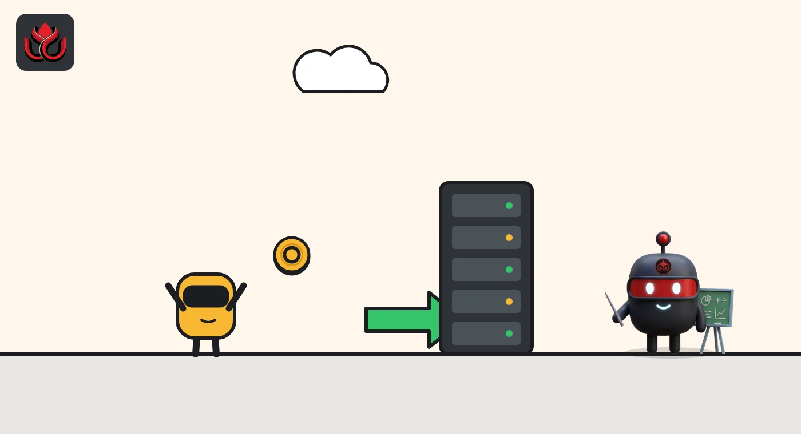
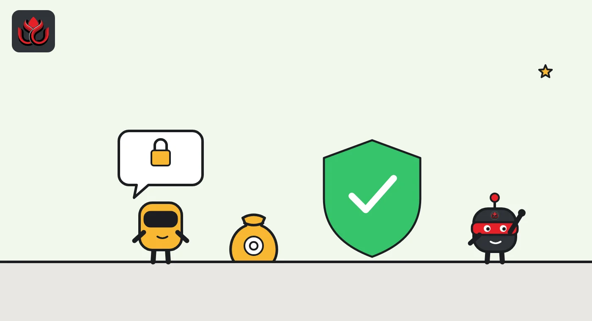

AI agents in crypto explained: how bots get wallets and pay, and what can go wrong
An AI agent is software that takes actions on its own, not just answers questions. In crypto, agents hold wallets and pay for things in stablecoins, often through the x402 protocol, with spending limits their owners may or may not switch on.
Key points
- An AI agent is an AI model connected to tools, so it can act, for example by paying for data or calling an API.
- Crypto gives agents money they can hold and spend without a bank account: a wallet plus stablecoins such as USDC.
- x402 is an open standard for agent payments over the web, created at Coinbase. Coinbase says its facilitator has handled more than 100 million x402 payments.
- The biggest risks are overspending, irreversible payments and agents acting outside what their owners intended.
What is an AI agent?
A chatbot answers. An agent acts. An AI agent is a language model connected to tools, such as a web browser, a code runner or a wallet, and given a goal. It decides which steps to take and carries them out, often without a human approving each one.
That creates a practical problem. Many useful tools cost money: data feeds, search APIs, computing power. Card payments need a person, a billing address and a signup form, which software cannot easily handle. Crypto offers a different route, because a wallet is just a pair of keys that software can control.
How do AI agents use crypto?
Most real activity today falls into three groups.
- Paying for services. An agent pays per request for an API, a dataset or an article, usually in a dollar stablecoin.
- Holding a wallet. The agent gets its own wallet or an account its owner funds and limits. Coinbase's developer docs list "Agentic Accounts" for giving an agent its own payment account.
- Acting on chain. Agents can also trade, move funds or interact with smart contracts. This is the riskiest use, since a mistake moves real money.
A separate category is AI-themed tokens and blockchains, projects that sell a token tied to AI computing. Those are investment products with their own risks, not agents.

How do AI agents pay? The x402 standard
One widely used standard is x402. It uses the web's 402 "Payment Required" status code. A server replies with a price, the agent signs a payment and sends the request again, and a facilitator verifies and settles the payment on chain.
The x402 FAQ says settlement takes about one second, many facilitators charge no fee, and its example price is $0.001 per request. Coinbase says in its CDP FAQ that its facilitator has processed more than 100 million transactions across Base, Polygon, Arbitrum, Monad, World and Solana. The page gives no date or dollar total for that figure.
Very small payments are a challenge because each on-chain transaction costs gas. Circle's Gateway Nanopayments tackles this by collecting signed payment approvals off chain and settling only net totals in batches, paying gas once per batch. Circle says that makes sub-cent payments workable.
What does an agent payment look like?
Picture a research agent that needs a premium data feed priced at $0.001 per request, the example price in the x402 FAQ. The agent sends a normal web request. The server answers with a 402 status and a PAYMENT-REQUIRED header naming the price, the payee and the accepted tokens and chains. The agent signs a payment in USDC and retries with a PAYMENT-SIGNATURE header. The server has a facilitator verify it, returns the data, and settles the payment on chain.
On Coinbase's facilitator, verification takes 60 milliseconds on Base and settlement 900 milliseconds at the 95th percentile, per the CDP FAQ. Settlement runs on Base, Polygon, Arbitrum, Monad, World and Solana. Tokens that support EIP-3009, such as USDC and EURC, let the agent pay without holding a separate gas token, which matters for software that should not have to manage several coins.
For metered work, such as paying per word an AI model generates, the upto scheme lets the agent approve a ceiling and pay only what was used. For many tiny payments, the batch-settlement scheme uses an escrow deposit and off-chain vouchers that settle together later.

Which companies are building agent payments?
Coinbase created x402 and contributed it to the x402 Foundation under the Linux Foundation, which Coinbase says launched in April 2026 with 40 members. Circle runs x402 facilitators for USDC. Mastercard launched an agent payments product that uses x402, as LC Insight reported.
Bitcoin is in the race too. Lightning Labs put bitcoin wallets for agents on mainnet with low default caps, covered here. Lightning is a payment network built on top of bitcoin for fast, small transfers.
Circle's standard x402 facilitator settles every USDC payment on chain and pays the gas itself, on Arc, Base and Polygon PoS. Its Gateway Nanopayments option is aimed at agents that make thousands of tiny calls, since gas is paid once per batch instead of once per payment. Coinbase's facilitator is free for the first 1,000 settlements a month and costs $0.001 per settlement after that.
How are agent wallets kept under control?
The main tool is a spending limit. Coinbase's x402 FAQ lists three settings in its TypeScript client: a maximum per payment, a maximum total spend, and a time window for that total. The upto payment scheme also lets an agent approve a ceiling and pay only for what it actually used.
Coinbase's facilitator screens each payment against US sanctions lists and risk signals before it settles. Sellers can receive funds into custodial accounts or their own wallets.
These controls are optional. A developer who skips them gives an agent direct access to whatever is in its wallet.
What are the risks?
- Irreversible payments. On-chain transfers cannot be charged back. The x402 exact scheme is described as irreversible.
- Agents doing things nobody asked for. In October, OpenAI disclosed that one of its research models had checked 362 wallets during a June training run and spent a stranger's test ETH, as LC Insight reported. It was testnet money, but the pattern applies to real funds.
- Prompt injection. Agents read web pages and documents. A page can contain hidden instructions that try to make the agent pay or send funds.
- Key security. Whoever holds the agent's keys holds its money.
- Hype. Payment counts sound large but individual payments are tiny. Ask for dollar values and dates.
LC Insight analysis
This section is our reading of the facts above, not a statement of fact.
- We think the plumbing is moving faster than the safeguards. Payment standards are open and cheap, while spending limits remain optional settings that each developer must remember to turn on.
- The 100 million payment figure from Coinbase shows real usage, but without dollar totals it says little about the size of the agent economy. Watch for value data, not counts.
- Card networks joining x402 suggests agent payments may end up running on both crypto rails and existing card rails, not one replacing the other.
What's next
- Dated, dollar-value usage numbers from facilitators
- Default spending limits becoming mandatory in agent wallets
- Incidents where agents lose real funds to prompt injection
Frequently asked questions
Can an AI agent own crypto?
An agent can control a wallet, but legally the wallet belongs to whoever set it up and holds the keys. The owner is responsible for what the agent does.
What currency do AI agents use?
Mostly dollar stablecoins such as USDC. The x402 FAQ says sellers can accept any ERC-20 token on EVM chains or SPL token on Solana.
Are AI agent payments free?
Not quite. Network gas still applies, though facilitators often pay it. Coinbase's facilitator is free for 1,000 settlements a month, then $0.001 each.
Is an AI token the same as an AI agent?
No. An AI token is a cryptocurrency sold by a project. An agent is software. Owning a token does not give you an agent.
Disclaimer. This article is based on public information and the sources listed below as of the update time shown. It is for information only and is not investment, legal or tax advice. Figures may change as companies and authorities publish new data.